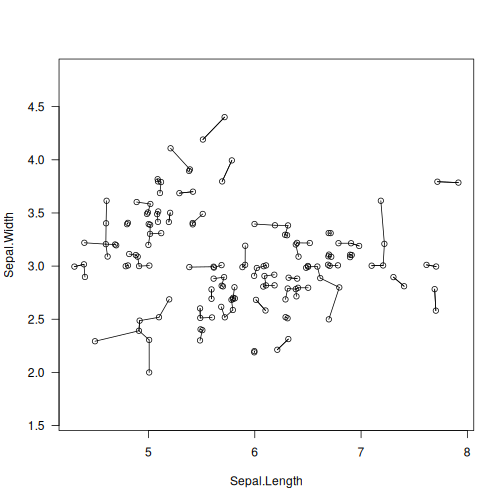

knn_euclid: Euclidean Nearest Neighbours¶
Description¶
If Y is NULL, then the function determines the first k nearest neighbours of each point in X with respect to the Euclidean distance. It is assumed that each query point is not its own neighbour.
Otherwise, for each point in Y, this function determines the k nearest points thereto from X.
Usage¶
knn_euclid(
X,
k = 1L,
Y = NULL,
algorithm = "auto",
max_leaf_size = 0L,
squared = FALSE,
verbose = FALSE
)
Arguments¶
|
the “database”; a matrix of shape \(n\times d\) |
|
requested number of nearest neighbours (should be rather small) |
|
the “query points”; |
|
|
|
maximal number of points in the K-d tree leaves; smaller leaves use more memory, yet are not necessarily faster; use |
|
whether the output |
|
whether to print diagnostic messages |
Details¶
The implemented algorithms, see the algorithm parameter, assume that \(k\) is rather small, say, \(k \leq 20\).
Our implementation of K-d trees (Bentley, 1975) has been quite optimised; amongst others, it has good locality of reference (at the cost of making a copy of the input dataset), features the sliding midpoint (midrange) rule suggested by Maneewongvatana and Mound (1999), node pruning strategies inspired by some ideas from (Sample et al., 2001), and a couple of further tuneups proposed by the current author. Still, it is well-known that K-d trees perform well only in spaces of low intrinsic dimensionality. Thus, due to the so-called curse of dimensionality, for high d, the brute-force algorithm is recommended.
The number of threads used is controlled via the OMP_NUM_THREADS environment variable or via the omp_set_num_threads function at runtime. For best speed, consider building the package from sources using, e.g., -O3 -march=native compiler flags.
Value¶
A list with two elements, nn.index and nn.dist, is returned.
nn.dist and nn.index have shape \(n\times k\) or \(m\times k\), depending whether Y is given.
nn.index[i,j] is the index (between \(1\) and \(n\)) of the \(j\)-th nearest neighbour of \(i\).
nn.dist[i,j] gives the weight of the edge {i, nn.index[i,j]}, i.e., the distance between the \(i\)-th point and its \(j\)-th nearest neighbour, \(j=1,\dots,k\). nn.dist[i,] is sorted nondecreasingly for all \(i\).
References¶
J.L. Bentley, Multidimensional binary search trees used for associative searching, Communications of the ACM 18(9), 509–517, 1975, doi:10.1145/361002.361007.
S. Maneewongvatana, D.M. Mount, It’s okay to be skinny, if your friends are fat, 4th CGC Workshop on Computational Geometry, 1999.
N. Sample, M. Haines, M. Arnold, T. Purcell, Optimizing search strategies in K-d Trees, 5th WSES/IEEE Conf. on Circuits, Systems, Communications & Computers (CSCC’01), 2001.
See Also¶
The official online manual of quitefastmst at https://quitefastmst.gagolewski.com/
Examples¶
library("datasets")
data("iris")
X <- jitter(as.matrix(iris[1:2])) # some data
neighbours <- knn_euclid(X, 1) # 1-NNs of each point
plot(X, asp=1, las=1)
segments(X[,1], X[,2], X[neighbours$nn.index,1], X[neighbours$nn.index,2])

knn_euclid(X, 5, matrix(c(6, 4), nrow=1)) # five closest points to (6, 4)
## $nn.index
## [,1] [,2] [,3] [,4] [,5]
## [1,] 15 19 16 34 86
##
## $nn.dist
## [,1] [,2] [,3] [,4] [,5]
## [1,] 0.2159604 0.3682194 0.4916704 0.5240702 0.6041195